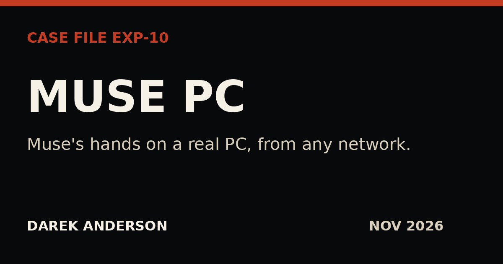

EXP-10
Muse PC
Direct connection from Muse into my PC gives it a real Windows environment to work in. As well as the processing power, which is the main weak link of Muse. I’m simply copying how it works with its Linux VM. This removes any edge Claude Code or Codex has over Muse. Muse PC can be used totally free with Muse, which is free (I use the paid plan). But literally this is the only option for cloud and local frontier intelligence that can do any task you want.
LIVE ON HIS PC

BUILT
A Tauri desktop app on the PC, paired to Muse over a Cloudflare relay (a Worker with a Durable Object room), live since November 19, 2026. The relay replaced a Tailscale-only path, so the link works from any network, not just the home one. A first attempt the same week, a polling runner, was retired the day it shipped in favor of this event-driven design.
Capability order is deliberate: command line and APIs first, then scripting, then MCP in both directions, then structured GUI control through UI Automation, and raw input last. Input can batch up to 50 steps under one approval. Long jobs run under supervision with output buffers, so a job can be tailed, written to, and killed mid-run.
WHAT BROKE
Four defects were found by testing and fixed with live proofs, not reports. The relay’s crypto library had no default provider, so connections failed until one was set. Pairing codes lived only in memory and died when the relay hibernated. Raising a minimized window failed silently until the raise verified the window was actually in the foreground. And a process kill once acknowledged success while the job ran 38 more seconds and finished; kills are now backed by Windows Job Objects and the acknowledgement waits for the process to exit.
HOW I JUDGE IT
Proof over report: every capability lands with a live test across the public relay. A 308-node UI Automation snapshot and a screenshot came through the link. A background Chrome window was snapshotted while another window held focus, then raised and verified in the foreground. A mid-render Blender kill froze the render at frame 1 with no second frame written. The Phase 3 parent suite stands at 30 of 30.
RESULTS
In daily use as the working link between Muse and the PC: builds, renders, and desktop tasks run through it. A signed installer is parked by decision, not by blocker.